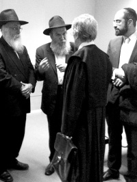

Justice Beyond the Law
Translated by Michoel Le 
THE MEETING WITH ATTORNEY TRIAS
More than a year has passed since Rabbi Eliyahu Hecht was arrested in Spain, a time full of anxious waiting until the day of his trial, which was finally set for the 15th of Teves. A few days before the hearing, Attorney Angela called me to find out if I was coming, explaining that my testimony on Eli’s responsibilities, his numerous trips overseas, and his financial conduct, was of critical importance. I told her that, G-d willing, I would come to testify and give as positive a testimony I possibly could.
When we arrived in Madrid, we went to meet with Attorney Trias in his center city offices. I had spoken with him frequently over the past year, and with his associate, Attorney Angela, who did a most thorough job in representing Eli before the courts. I provided them with dozens of documents, later submitted to the court in a bulging file.
Attorney Trias has a very strong connection with the Spanish Jewish community, and has already represented Jews and Israelis previously before the courts. A few years ago, he won a famous case in which he represented a Jewish woman who had sued a neo-Nazi for denying the Holocaust. As a result of this case, when Attorney Trias won a seat in the Spanish parliament, he passed a law against Holocaust deniers.
After so many telephone conversations with someone, it’s always interesting to meet that person face-to-face. We held a lengthy meeting with the defense team, which had gone through every detail of the testimonies Eli and I would present to the court the following day.
After davening, we headed for the courthouse. We waited for some time outside the courtroom with great anxiety. People suggested that I should say T’hillim, but I replied that many Chassidim throughout the world were surely saying T’hillim for Eli at that very moment. For my part, I felt that it would be far more important if I spent my time focusing on the mission that lay before me. Over and over again, I practiced in my mind everything that I was about to say in my testimony, until I had prepared my statement accordingly. I mentioned to a friend the words of Yehuda HaMaccabi: “Is G-d limited in His ability to save many or few?” We hoped for the best.
HOPING FOR A MIRACLE
About a thousand people are caught in Spain each year with drugs in their luggage, and when brought to trial, all of them claim that they knew nothing about it. How could we possibly convince the judges that Eli was different?
Attorney Angela told me that out of the thousands of people who had thus far been caught on charges of drug smuggling, only three had been acquitted. The narcotics that had been planted in Eli’s valise were of an unusually large quantity. It seemed that any hope of securing Eli’s release was almost totally unrealistic!
I recalled one of the Rebbe’s sichos from Parshas Shmos (Likkutei Sichos, Vol. 36), in which he explains “And this is the essence of the command ‘Trust in G-d’ (etc.) – that the person puts his trust in G-d, who will bestow His revealed good upon him, and when he relies upon G-d alone (without considering whether he can possibly be saved, etc.), then His conduct towards him is higher than ‘measure for measure,’ i.e., G-d protects him and has mercy upon him, even if he really hasn’t proven worthy of such revealed good. And this is the explanation of the words of the Tzemach Tzedek, that the trust itself will bring good results, which is not merely a side issue to the trust, rather this is within the realm of the trust regarding which we have been commanded.”
The period of Eli’s incarceration in Spanish prison was particularly difficult. Because he had no access to kosher food there, he could only eat some vegetables, tangerines, and hard-boiled eggs. When Rabbi Benzaquen managed to convince the warden to allow Eli to eat kosher food, the warden then asked a female Israeli prisoner to cook for him. This prisoner also had a sad story. She and her male companion had landed at the Madrid airport, when her friend was caught trying to smuggle drugs. Everyone arrested with drugs usually claims that they knew nothing about it, but this person immediately admitted that the drugs were his in order to save his friend. Nevertheless, the girl was also arrested, and she has been in prison now for a year. To this day, there is no trial date in sight. The thought that Eli would be in a similar situation was far more than we could bear.
A few months ago, we contacted a judge in Spain who was familiar with cases of this type, and he told us, “Folks, I don’t want you to despair, but you have to consider the fact that there’s going to be a sentence of several years in prison.”
Nevertheless, we hoped for a miracle. Eli had traveled to Madrid as the shliach of “Kollel Chabad,” and out of the goodness of his heart, he had agreed to take a suitcase for a destitute woman as a personal favor. We believed that the brachos of our Rebbeim, the presidents of Kollel Chabad for generations, would come to his aid in this crisis.
THE POLICEMAN’S HELPFUL TESTIMONY
After a long wait, Eli’s turn came to enter the courtroom for the first time. The other witnesses were asked to wait outside. We wished him well, and we davened that G-d would have mercy upon him, help him to say the right words, and find favor in the eyes of the judges.
Until we were called in to testify, we passed the time speaking with the Spanish policemen who had arrested Eli at the airport and had come to offer their own testimony. Since I don’t speak Spanish, I could only give them a pleasant smile and make a few signs with my hands, while Rabbis Benzaquen and Libersohn had a lengthy and friendly discussion with the policemen. Their efforts definitely paid off. After the officer testified, the interpreter told Eli, “You ought to kiss him for the very sympathetic way he gave his testimony.”
THE PRESIDING MAGISTRATE’S CORDIALITY
After Eli and the police officers had completed their testimony, I was called in to testify. I had prepared myself for this fateful moment for a whole year. The thought of those months that Eli had already spent in prison tormented me to no end. I prayed that we merit doing G-d’s Will and that we succeed in releasing Eli. Since the lawyers had told me that my testimony was most critical to the trial, I tried during those moments to forget everything around me and to focus all my strength upon the task that lay before me. Despite the fact that I was experiencing tremendous inner turmoil, I tried to exude a sense of trust and confidence.
I entered the courtroom. Sitting before me was a panel of three judges. We knew that the presiding magistrate was very devout in his religion (a fact that proved most advantageous for Eli), and was also a most pleasant and upright individual. The woman judge sitting to his right gave the impression as someone open-minded, whereas the judge to his left did not.
The prosecutors and defense attorneys sat facing one another, with Attorneys Trias and Angela seated at the defense table. Attorney Trias explained to me that the Spanish legal system is based on the Inquisition approach, where the prosecutor holds a much higher-ranking position than the defense lawyer. Attorney Angela began her presentation, and then asked me to speak about the activities of “Beit HaTavshil Eshel Binyomin” and Eli’s role with the institution. I sat before the judges, but at first, the words wouldn’t come. I eventually managed to regain my composure and gave my testimony. The interpreter sat near me and translated what I said into Spanish, and then he translated the prosecutor’s and court’s questions into Hebrew. As he was interpreting, he said to me with much excitement, “The presiding judge is being unusually receptive. I’ve never seen a judge respond in such a manner.” Even Attorney Trias said to me at the end of the proceedings that in his forty years since becoming a lawyer, he had never seen such understanding shown by a Spanish magistrate. But they didn’t know the secret behind it all – and here it is:
After Eli’s imprisonment, I spoke with dozens of people about the imprisonment and pending trial, and I heard various ideas. One of them was from an Anash member who had been imprisoned in South America many years ago. He told me that the Rebbe spoke at a farbrengen about the need to help him. A simple Jew from Yerushalayim who heard what the Rebbe had said made a special trip to attend his trial. He stood before the judge and repeated the name of Avraham Avinu’s mother, Amaslai bas Karnevo, as is mentioned in the seifer Avodas HaKodesh (by the Chid”a): “It is a segula for someone going before a king, a minister, or a governor to say seventeen times Amaslai bas Karnevo.” The man was actually released from prison!
When the judge spoke with me most respectfully, and I courteously smiled back, I mentioned the name Amaslai bas Karnevo – and it worked!
At the conclusion of my testimony, the judge asked them to have the entire transcript of the trial translated for me (something most unusual), since “such an important person has come to the court.” In his summation, the presiding judge also noted the unique and remarkable atmosphere that reigned in the courtroom. The friendly mood that prevailed was most uncharacteristic for a normal court case. Even the prosecutor noted this in his statement before the court, and how Eli was not the type of person one usually encounters in a court proceeding. Yet, while the overall reaction was indeed special, the most important thing was for Eli to be found innocent of all charges and return home.
After I finished testifying, I asked if I could say a few words in closing. I said that I was absolutely convinced of Eli’s innocence, referring specifically to his goodhearted nature. I mentioned how the previous day, after we had already disembarked from the train, Eli went back to help an elderly woman with her packages. I also remarked that Eli, good-natured person that he is, gave the t’fillin that he had in prison to another Jew in order to encourage him to start putting on t’fillin regularly, and he thereby had to use other people’s t’fillin. During the ten years he has worked with us, Eli has shown great concern for the needy people who came to make use of our public soup kitchens in Tzfas. I explained that it was only because of his goodhearted nature that someone was able to take advantage of him without his knowledge.
Afterwards, Rabbis Libersohn and Benzaquen entered and gave their own testimony. With the court’s permission, they explained the widespread custom among ultra-Orthodox to assist others in delivering parcels of kosher food from one community to another. The Gentile judges had difficulty understanding such conduct. One of the displays presented to the judges was a series of pictures of the piles of suitcases at the entrance to 770 during Tishrei.
It was most helpful that the presiding magistrate was a very religious man. At the conclusion of the court proceedings, he told us, “We are Christians, and in essence, we all come from the Jews.” The manner in which he related to us was very touching, but it wasn’t the main thing. We were anticipating that the truth would come to light, and the court would be convinced that Eli was completely innocent.
THE LAWYER CALLED AND CRIED, “YOU’VE BEEN ACQUITTED!”
We returned to Barcelona with mixed feelings. When we traveled to Madrid, Eli brought a large satchel with him. I didn’t ask him why, but it seemed to me that he had been prepared ch”v to go back to prison at the end of the trial. To our great joy, at the conclusion of the proceedings Eli was released on his own recognizance to wait in Barcelona for the court ruling. We were all left with one big question in our hearts: Had the judges been convinced of Eli’s innocence? We returned to Barcelona very late at night, totally drained and exhausted.
Two weeks later, on Friday afternoon, the 3rd of Shvat, the attorney called Eli and cried into the telephone with great emotion, “You’ve been acquitted! You’ve been acquitted!”
It’s hard to describe the elation I felt when Eli called with the news. We had asked ourselves thousands of times during the past year: Would we come to this joyous moment? Here it had come. Despite all the obstacles, justice had been done!
THE MIRACLES KEEP COMING
But neither the tension nor the string of miracles had come to an end. According to Spanish law, after the court decision is signed, the opposing side has five workdays during which they can file for an appeal. To put it simply, if the prosecutors would decide to appeal the decision, Eli would not be released until another trial was held. We waited with great anxiety, as the court ruling ran against all legal reasoning, and we were very concerned that the prosecutors would appeal. As a result, Eli would then have to stay in Spain for another lengthy period of time until the matter would be settled.
Eli traveled to Madrid on Tuesday to sign the court decision. The attorney made it very clear to him that there was no chance that he would be released before the passage of five days. However, she apparently didn’t yet understand who runs the world.
Eli tried to explain to the attorney that we had a most auspicious day on Thursday night – Yud Shvat – and it would be very important to him if he could participate in the festivities. The attorney, in turn, made it clear that there was no way to bypass the law, but Eli pleaded with her to request permission from the judge for his release. She eventually agreed to try.
When they arrived at the courthouse, they discovered that the judge was busy with another deliberation, due to last for some time. As the wait took longer than expected, the lawyer explained to Eli that she simply couldn’t stay and she had to leave. Eli asked her to wait for just another fifteen minutes. Incredibly, exactly fifteen minutes later, the hearing went into recess, and the judge came out.
The attorney approached the judge and explained Eli’s irregular request. Then, unbelievably, the judge turned to Eli, and in the profusion of words he said to him in Spanish, Eli understood only one word: “Liberté! Liberté!” – You’re free!
But not only that, the judge himself personally went with Eli and the attorney to the office and made all the necessary arrangements. When they told Eli that he had to come back the next day to receive the contributions that had been confiscated at the airport and sign that they had been returned to him, the judge intervened. He arranged for the money to be deposited directly into the “Eshel Binyomin” bank account, thereby preventing any further delays. Eli called me with the news: “I’m on my way home!”
Eli landed in Eretz Yisroel on Wednesday evening, and arrived at his home very late at night. G-d answered his prayers and enabled him to participate in the Yud Shvat farbrengen.
* * *
In the name of the members of the rescue committee, I want to thank all those who gave their financial support, enabling us to raise the hundreds of thousands of shekels necessary to cover the legal expenses. Special thanks go to the executive director of Kollel Chabad, Rabbi Shalom HaLevi Duchman, who invested much toil and effort in helping us with our fundraising activities. There were many nights when I asked myself: How will I be able to meet the overwhelming financial obligations that I agreed to take on?
A big Yasher Ko’ach goes to all the many people who called to offer their encouragement and advice. The tremendous support that we received from them and their genuine concern for Eli’s welfare touched our hearts. It gave us the strength we needed to carry on during the very difficult moments, and there were many of those. It was most moving to see how Eli’s story affected so many people – not just in Lubavitch, but throughout world Jewry.
I also want to thank those who davened and said T’hillim on Eli’s behalf. There is no doubt in my mind that it was only in the merit of these prayers and the holy blessings of the Rebbe, that salvation came to Eli above and beyond all nature. Together with all Anash, we pray that Reb Sholom Mordechai HaLevi Ben Rivka Rubashkin should soon have his own miracle of personal redemption.
Our deepest heartfelt thanks go to our fellow rescue committee members, Rabbis Libersohn and Benzaquen, with whom we made this long journey. We never would have reached where we did without the exceptional sacrifice and Ahavas Yisroel of these two dear rabbis and all that they did for Eli. May G-d bless them with all the goodness only He can bestow in its most revealed sense. Together, as emissaries of the Jewish community as a whole, we were privileged to fulfill the mitzvah of pidyon shvuyim.
In the merit of Eli’s personal redemption, we should merit the overall Redemption with the revelation of Moshiach Tzidkeinu, immediately, mamash!
Crombie. "Justice Beyond the Law." Beis Moshiach, no. 824 (February 24, 2012).